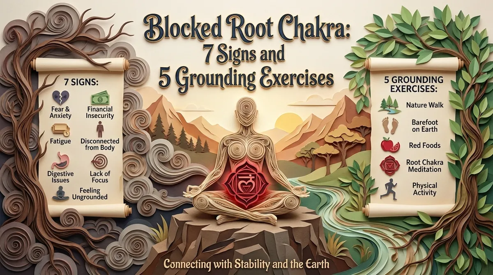
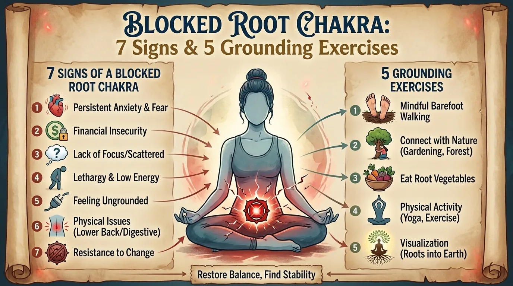
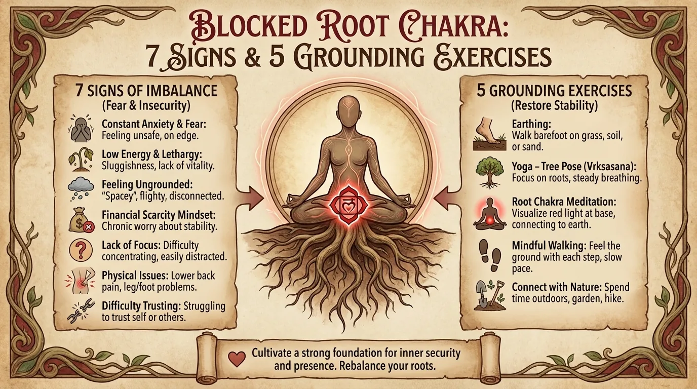

Blocked Root Chakra: 7 Signs and 5 Grounding Exercises

Feeling unsettled, anxious or stuck in your head? Learn 7 signs linked to a blocked root chakra and 5 simple grounding exercises to feel steady again.
The root chakra: before you try to open your third eye, your feet need to be standing somewhere
In the modern yogic tradition of the chakras, the root chakra, called Muladhara, is presented as the first energy center of the subtle body, symbolically located at the base of the spine, associated with the color red, the earth element and everything to do with stability, safety, the physical body, basic needs and the feeling of having a place in the world.
In other words: before setting off to explore the heights of consciousness, extraordinary intuitions and subtle meditative states, the root chakra asks a much less glamorous but much more important question:
Do I feel stable enough here, now, in my body and in my life?
That is precisely why root chakra practices, energetic grounding, rooting meditation or grounding remain hugely popular in yoga, meditation, body-based practices and some strands of personal development.
We do need to be precise, though: modern science has not demonstrated that chakras exist anatomically as measurable energy centers.
The root chakra belongs to a traditional, symbolic map of the subtle body, not to medical anatomy.
That doesn’t necessarily make the practices associated with it useless.
Many so-called “root chakra grounding” exercises actually rely on perfectly concrete mechanisms: feeling your feet, slowing your breathing, shifting your attention to bodily sensations, walking, tensing then releasing your legs, feeling gravity, observing your surroundings.
In other words, even if you choose to treat chakras as a metaphor rather than a literal energetic reality, grounding in the body is still a real skill.
And sometimes, an excellent one.
Seven signs often associated with a “blocked” root chakra
In contemporary energy traditions, people speak of a blocked root chakra when someone has a lasting difficulty feeling stable, present, safe or connected to their body.
This is obviously not a medical diagnosis.
But certain signs come up again and again.
1. A diffuse anxiety with no specific object
You aren’t necessarily afraid of something.
You simply have the feeling that something might happen.
So the mind goes looking for a reason for this tension:
- money;
- work;
- relationships;
- health;
- the future.
But behind all these scenarios there is sometimes a more primitive bodily sensation:
“I’m not completely safe.”
2. Trouble staying in the present moment
Your body is sitting on a chair.
Your mind, meanwhile, is already next Tuesday.
Or in 2017.
Or in an imaginary conversation that will probably never happen.
This tendency to live in your head is exactly what many grounding techniques try to counterbalance.
3. Constant physical restlessness
Jiggling your leg.
Shifting position.
Checking your phone every thirty seconds.
Jumping from one task to another.
Restlessness isn’t necessarily a problem in itself, but when it becomes permanent, it may suggest that your system struggles to simply settle.
4. A strong sense of insecurity
A constant need for reassurance.
Difficulty tolerating uncertainty.
The feeling that everything could quickly fall apart.
In the language of the chakras, these experiences are often linked to the root chakra because they go straight to the heart of safety and stability.
5. A disconnection from bodily sensations
Some people know their thoughts perfectly well but their sensations much less so.
Ask:
“What are you feeling in your body?”
Answer:
“I think that…”
Which was precisely a different question.
6. Difficulty with change
Every change of plan feels like a mini-disaster.
Every unexpected event feels like the ground is shifting.
Grounding works precisely on the ability to keep an inner reference point even when your surroundings change.
7. Fatigue combined with an overactive mind
The body wants to sleep.
The brain is hosting an international conference.
This is an extremely common pattern in chronic stress: physical exhaustion and mental activation persist at the same time.

The interesting link with the autonomic nervous system

Even though the Muladhara chakra is not a recognized biological structure, there is a particularly interesting parallel with the regulatory mechanisms of the autonomic nervous system.
When an organism perceives danger or strong uncertainty, attention naturally becomes more focused on the threat.
The body may get ready to act.
Breathing changes.
Muscle tone increases.
The brain monitors the surroundings more closely.
Grounding exercises take the opposite route.
In a way, they tell the attention system:
“Notice what is actually here.”
The weight of your feet.
The contact of the chair back.
The floor.
The temperature of the room.
A sound.
A color.
A breath.
This strategy closely resembles the grounding techniques used in psychology, particularly to reduce excessive emotional activation or help someone return to present sensory information.
So the principle isn’t:
“I’m going to magically repair my red chakra.”
It can be much more concrete:
“I’m going to step out of the mental scenario for a few moments and reconnect with the information my body and my surroundings are sending me.”
Which, let’s be honest, is already an excellent use of five minutes.
Five grounding exercises for the root chakra
Exercise 1 — Heavy feet
Stand with your feet hip-width apart.
Don’t visualize anything for the first few seconds.
Just feel:
- your heel;
- the ball of your foot;
- your toes;
- the pressure on the floor.
Then gently shift your weight forward.
Backward.
To the left.
To the right.
Come back to center.
Only then, imagine the weight of your body sinking further into the ground.
This exercise seems almost too simple.
That is exactly the point.
Your attention leaves your head and returns to gravity.
Exercise 2 — Ten minutes of mindful walking
Walk slowly, but not theatrically.
You don’t have to look like a monk in a documentary.
Just feel:
- the heel touching down;
- the foot rolling forward;
- the push from the toes;
- the movement of the pelvis;
- the swing of the arms.
Every time your mind drifts back to a problem, come back to one step.
Then the next.
Mindful walking is one of the best meditation practices for people who find it hard to stay still.
Exercise 3 — Low breathing
Place one hand on your belly.
Breathe in calmly.
Notice the slight movement of your abdomen.
Then breathe out without forcing.
Don’t try to breathe “massively.”
Instead, look for a gentle, low, comfortable breath.
For five minutes, pair each out-breath with a feeling of weight.
Exercise 4 — The 5-4-3-2-1 senses technique
Look around you and find:
- 5 things you can see;
- 4 things you can touch;
- 3 sounds;
- 2 smells;
- 1 taste or sensation in your mouth.
This method doesn’t historically belong to the chakra traditions, but it is an excellent example of sensory grounding.
It works especially well when your mind runs off into anxious scenarios.
Exercise 5 — Mountain pose
Standing.
Feet steady.
Knees unlocked.
Pelvis neutral.
Spine straight.
Shoulders relaxed.
Crown of the head reaching up.
Mountain pose, Tadasana, looks motionless, but it demands a great deal of bodily presence.
Feel two directions at the same time:
- your weight sinks down;
- your spine lengthens.
That’s almost the entire symbolism of the root chakra summed up in one posture.

The five-minute grounding meditation

Sit down.
Start by feeling your feet.
Then your legs.
Then your pelvis.
For one full minute, don’t look for anything else.
Then imagine your breath flowing down toward your lower belly.
Of course, the air doesn’t actually travel down to your pelvis: it’s an image for your attention.
With each out-breath, imagine more weight.
Then, if you like, picture a deep red color at the base of your pelvis.
You can silently repeat:
“Here.”
“Now.”
“Ground.”
“Body.”
Nothing spectacular.
Grounding is precisely the art of finding the ordinary again.
When grounding is enough… and when you need something else
Grounding techniques can be helpful for everyday stress, restlessness, rumination and some passing feelings of disconnection.
But they don’t replace medical or psychological support when someone is dealing with significant anxiety, panic attacks, trauma symptoms, persistent dissociation or distress that seriously disrupts their daily life.
In that case, you can absolutely keep the body exercises as a complementary tool while seeking professional help.
The root chakra can then remain an interesting image.
But no spiritual image should ever stop you from taking a real problem seriously.
And perhaps that, in the end, is the best grounding of all:
staying connected enough to reality to use each tool in its rightful place.
Frequently asked questions
How do I know if my root chakra is blocked?
In energy traditions, an unbalanced root chakra is generally associated with insecurity, restlessness, fear, difficulty feeling present and disconnection from the body. These signs, however, are not a medical diagnosis.
What color is associated with the root chakra?
The Muladhara chakra is generally depicted in red in modern seven-chakra systems.
What is the best exercise to unblock the root chakra?
Mindful walking, standing postures, working with the feet, low breathing and sensory exercises are all excellent grounding practices.
How long should I practice grounding?
Five to ten minutes a day is enough to start. Regularity is generally more useful than a very long session done only now and then.
Rather practice than read?
Everything in this article can be practiced in MeditaDream, a free meditation app: 129 guided meditations and 17 immersive worlds, with no subscription, no ads, no account, and fully offline.
✦ Discover the free app